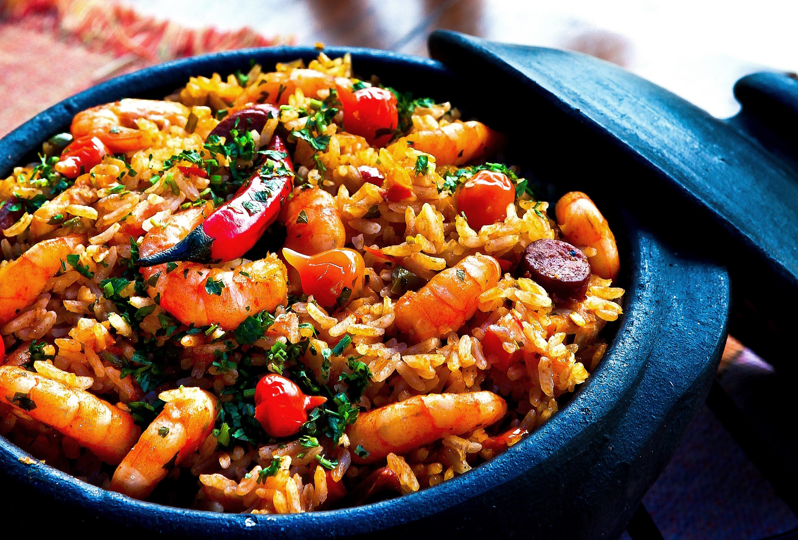
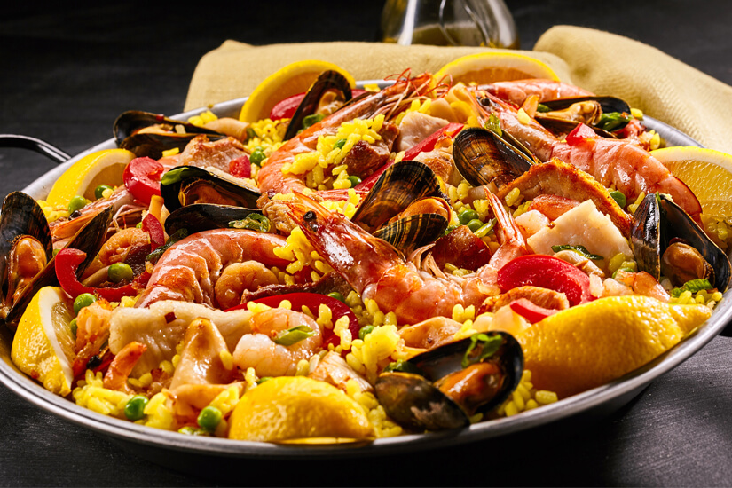
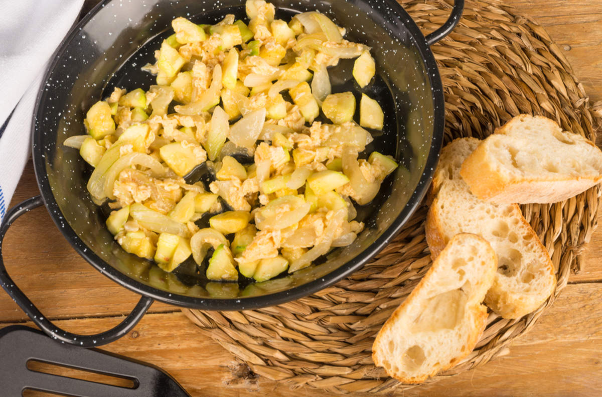
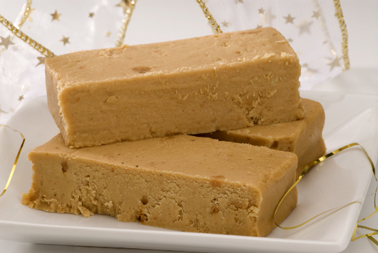
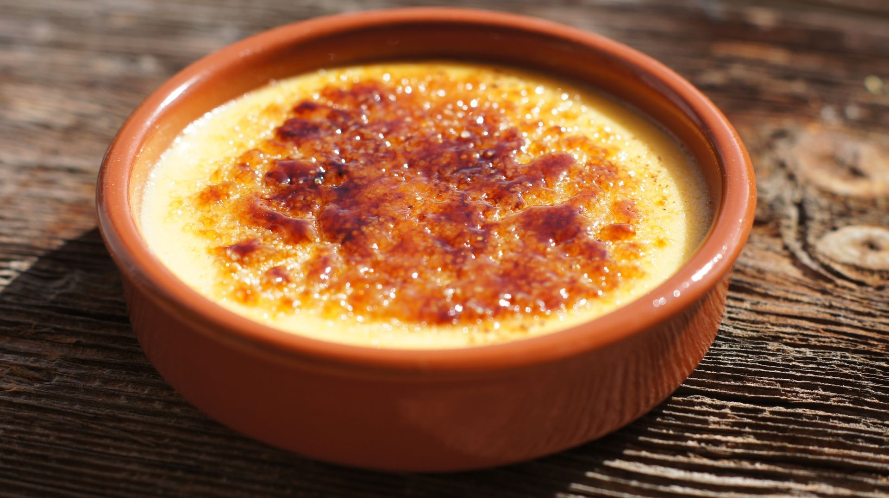

Nuestra Carta

Pa amb tomàquet
Deliciosa tostada con tomate y aceite de oliva

Paella
Un clásico plato de arroz con mariscos y verduras

Fideuà
Un plato de fideos con mariscos, típico de la costa

Zarangollo
Un guiso de calabacín y huevo, típico de Murcia

Turrones y dulces
Variedad de turrones y dulces típicos del este

Crema Catalana
Postre cremoso con una capa crujiente de azúcar